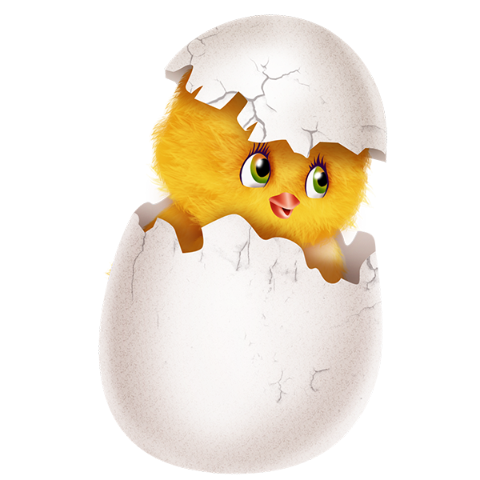
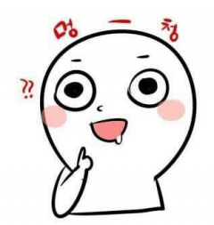

I am EGG
저는 스스로를 달걀이라 부릅니다. 껍질속에서 외부와 격리되어 아직 참새가 될지 두르미가 될지 독수리가 될지 아무것도 정해지지 않은, 스스로는 그냥 가만히 노른자의 영양분을 받아먹기만 하는. 그러나 그렇게 정해진게 없기 때문에 수많은 방향성을 내포하고 있는 달걀의 태도를 가졌습니다.
저는 껍질을 깨어 나가는 사람입니다. 세상으로 나가기 위한 벽은 아직 두껍기만 하고 방향성을 정하지 못한 저로서는 벽을 부술 부리도 없습니다. 그래도 저는 하나의 생명체로 부화하기 위해 열심히 나아갈 것 입니다.
We're developers. They're the ones who build up the cyber world and bring it to reality.
He is CRAZY
솔찍히 내가봐도 이상한 성격으로, 유사 조울증이라고 볼수 있다고 생각하는 상태. 오늘은 활발하게 이야기하다가 내일 되니 혼자 찌그러져 있다든지 하는 초 기분파. 그나마 화내거나 짜증내는 일은 거의 없어서 다루기는 좋은듯 하다. 대충 만만한 스타일인듯. 세간의 평가에 따르면 이상한 개그욕심이 있다고 한다.
The truth is,
처음엔 감성 적인척 써봣는데 중간에 시간이 없어서 그만뒀다고 한다
깔끔한 척 하려고 스크롤 지워봤는데 창에 맞춰서 가로길이 자동조절 기능 못추가해서 디게 이상해졌다고 한다.